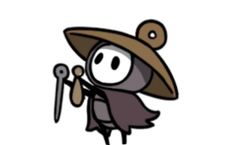
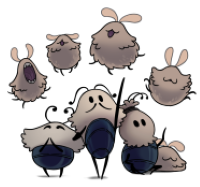
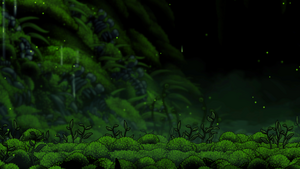
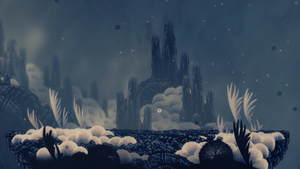
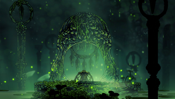
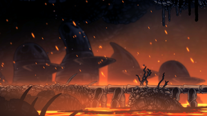
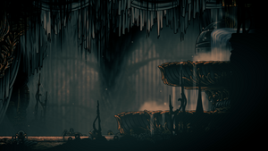

Hollow Knight é um jogo 2D focado em exploraçao, sua tematica se baseia em um mundo de insetos.
SilkSong é o segundo jogo da franquia, se passando em Fiarlongo, e com outra protagonista,
após 7 anos de desenvolvimento, ele se tornou o jogo independente mais aguardado da historia recente.
A protagonista do jogo, filha de aranhas, ela é levada a terra Natal de seu povo, com a esperança de poder protege-la.

Um peregrino otimista que esta sempre a cantar, buscando salvaçao e segurança na Cidadela no topo do reino.
Uma caravana itineraria de pulgas indefesas, que anda por Fiarlongo em busca de uma terra segura para morar.
O mapa abrange diversas areas e tematicas, com personagens e historias proprias. As areas proximas possuem aspectos em comuns e transiçoes organicas, ajudando na construçao do mundo.
   As imagens são de "Gruta Musgosa", "Monte Pluminidio", "Verdania" e "A Medula" respectivamente.
Um dos aspectos mais famoso da franquia é sua trilha sonora, composta por Christopher Larkin, ela ajuda a regular a atmosfera das areas e lutas do jogo.
Musica dos Saloes Sussurrantes
Fonte das imagens e mais informaçoes acesse: SilkSong Wiki.